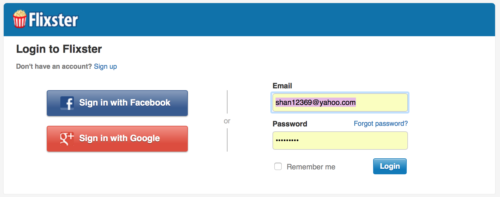

Login
The login page for Flixster is easy as pie. There is an option to sign in with Facebook or Google to save the user the time of filling out the registration form. This is also the area to login if you already have an account. A remember me option is available as well as a forgot password link for those who did register. People who use Flixster usually have a digital movie library and are ready to watch a flick, not fill out forms.
